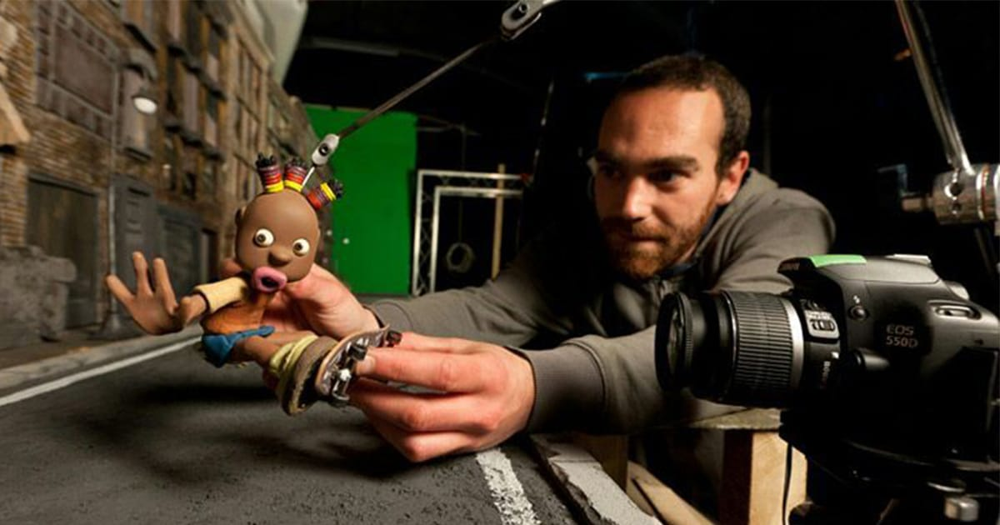
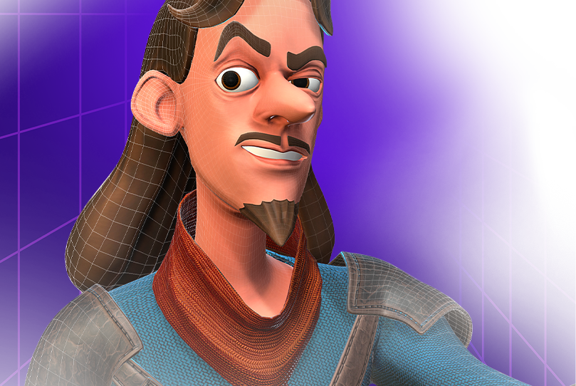
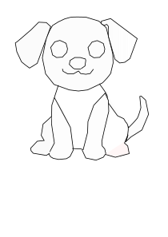

Tipos de Animação
Conheça as principais técnicas de animação utilizadas no cinema, games e produção audiovisual.
Stop Motion
Stop Motion é uma técnica de animação que utiliza a captura fotográfica quadro a quadro de objetos físicos. Cada fotografia registra uma pequena alteração na posição dos objetos, e quando reproduzidas em sequência, criam a ilusão de movimento. Famosos filmes como "Coraline" e "A Fuga das Galinhas" foram produzidos com essa técnica artesanal e encantadora.
Animação 2D

A animação 2D tradicional, também conhecida como animação cel, envolve desenhar cada quadro manualmente. Pode ser feita com papel e lápis ou digitalmente usando softwares como Adobe Animate e Toon Boom. Clássicos da Disney como "O Rei Leão" e séries modernas como "Adventure Time" são exemplos icônicos desta técnica atemporal que continua popular até hoje.
Animação 3D
A animação 3D utiliza modelos tridimensionais criados em computador, permitindo movimento em todos os eixos e realismo impressionante. Softwares como Blender, Maya e 3ds Max são amplamente usados. Esta técnica domina a indústria do cinema de animação atual, com estúdios como Pixar e DreamWorks criando obras-primas como "Toy Story", "Shrek" e "Elementos".
Veja abaixo dois desenhos que você poderia explorar sua criatividade e animá-los.
Imagem Vetorial (SVG) vs Imagem Matricial (Bitmap)
Vetorial (SVG)
Bitmap

A imagem vetorial pode ser ampliada infinitamente sem perder qualidade. Já o bitmap, ao aumentar, revela os pixels.